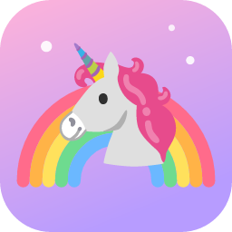

Hailey's Learning LandSupport
Need help? Email preston5@protonmail.com. I usually reply within a few days.
Is everything really free?
Yes. All eight games are free and unlocked. There are no subscriptions, in-app purchases or ads.
Does it work without internet?
Yes. Everything is built into the app, so it works in the car, on a plane, or anywhere without signal.
What ages is it for?
It's made for children about 3 to 6 years old. The games start easy and get a little harder as your child answers correctly, then ease off again if they need help.
I can't hear the voice
- Turn up the volume with the side buttons.
- On iPhone and iPad, the app plays even when the silent switch is on.
- Tap the speaker button at the top of any game to hear the instruction again.
Does the app save drawings or progress?
No. To keep things simple and private, nothing is saved. Each time the app opens, every game starts fresh.
What's behind the "Grown-ups" button?
Information about the app, this support page and the privacy policy. To open it, tap the two numbers that are written as words. Young children who can't read yet won't get through by chance.
Credits
Pictures are Noto Emoji by Google (Apache License 2.0). The voice was generated with the open-source Kokoro text-to-speech model (Apache License 2.0). The font is Fredoka (SIL Open Font License). Sight words come from the Dolch word list.